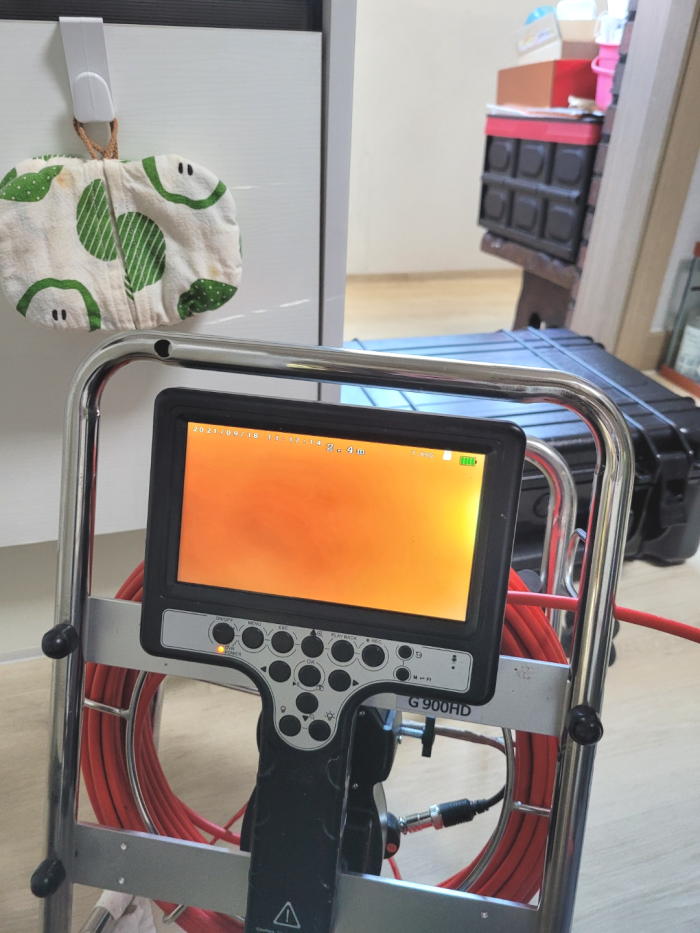
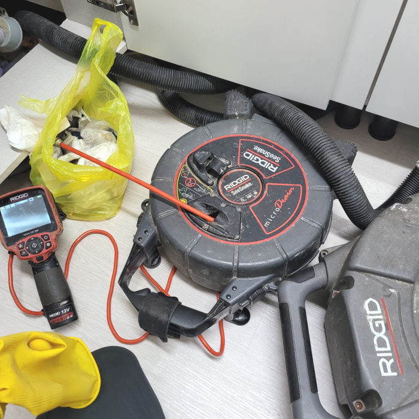
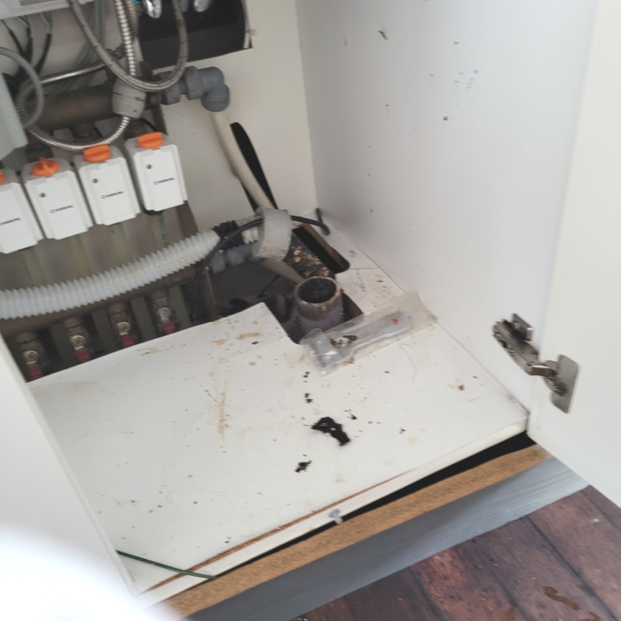
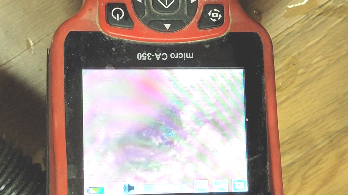
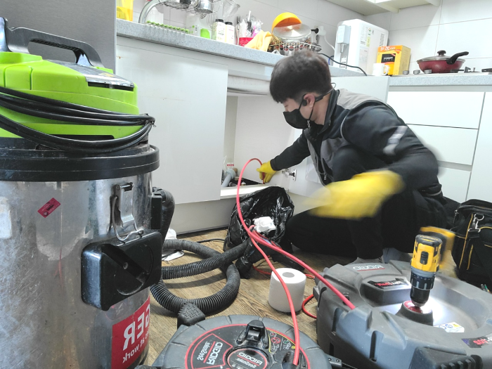

🏠 안양 안양동싱크대배수구막힘 집수정청소 해결방법
안양 싱크대막힘 전문 시공 후기

📋 작업 개요
- 위치: 안양
- 서비스 유형: 싱크대막힘, 변기막힘, 하수구막힘, 배관막힘, 집수정막힘, 누수수리, 역류해결, 뚫는업체, 배관청소
- 작업 일시: 2024. 9. 26. 13:12
- 업체명: 하수구수사대 (010-5615-2118)
🔍 문제 상황
안녕하세요^^
설비전문업체 "하수구수사대"를 찾아주셔서 감사합니다.
물을 흐르는 곳에서 잘 사용을 하시다가 어느 순간 갑자기 배수관물이 잘 안내려가고나 물이 역류하는 경우는 많은 곳에서 일어 날 수가 있습니다.
안양 평촌 싱크대배수관막힘 관양동 배수구역류 배관수리 설비업체
상태가 더욱심각해지면 물이 새는 증상이 나오게 되는데요 안고치고 방치한다면 여러배관에 같은 증상이 나타나거나 각종 냄새들이 온 집안과 공간을 괴롭히게 됩니다.

🔎 원인 분석
💡 전문가 진단: 안양 평촌 싱크대배수관막힘 관양동 배수구역류 배관수리 설비업체
퇴수구의 상태나 구조에 따라서도 추가 비용이 발생될 수 있는 것인데요. 이는 바로 작업량이 늘어나기 때문입니다. 가정이 아닌 카페나 음식점 등과 같은 업체에서의 하수구 막힘 비용은 보통에서 조금 더 나간다고 생각해 주시면 되는데요.
심각하게 막힌 현장은 기본장비로는 소용이 없어서 다른 방법을 진행해야 하는데 이럴때 주로 사용하는 것이 샤프트장비입니다. 퇴수 장비는 이물질을 단순히 뚫어내기보단 이물질을 분쇄하는 방식으로 최근에 많이 사용하고 있는 방식입니다.
막힘 증상은 느닷없이 발생된 것은 아니고 막힘의 전조증상이 보이면서 심각한 배출구막힘으로 전환이 되는 것입니다. 의뢰인께서 배출구막힘을 인식 못하셔서 줄곧 이용을 하다가 오물 덩어리가 배관으로 흘러 들어가 쌓이면서 심한 막힘이 나타나는겁니다.
특히 T자 배관의 막힘 증상의 경우는 일반적인 퇴수 배관의 막힘 증상과는 조금 다르게 나타나는 경우가 많은데요. 그러므로 이 부분을 셀프로 판단을 하고 좀 더 올바른 대처를 진행하실 수 있었으면 합니다.
그래서 자세한 상황을 알아보기 위해서 우선 배관 내시경을 통해서 내부에 달라붙어 있는 이물질과 찌꺼기들 그리고 기름 덩어리들을 확인을 하였습니다. 하수도 내부에 있는 이물질들을 확인을 한 후에 본격적으로 하수도막힘을 해결하는 작업을 시작하였는데요.
사진으로 보시는 것처럼 배관으로 내시경을 넣어 확인해 보았더니 싱크대볼이 문제가 아니라 배출관에 기름 스케일이 쌓여서 슬러지가 생기는 바람에 물흐름을 방해하고 있었습니다.

🔧 작업 과정
배수구 막혔다면 어떤상황이 발생할까요? 느리게물이흘러가거나 역류가발생하거나 누수가발생하게되는데요.이중에서 하나라도 보셨다면 확실히막힌것이에요
저희배출구설비회사의경우 실력자로만 모여있기에 확실하게뚫어버릴수 있다는생각을갖고 설령실패했더라도 비용을요구하지 않고있기때문에 걱정하시지않아도됩니다
작성하는 글들은 사실만을 적시했고 오랜시간동안 많은 하수도들을 고쳐왔으며 이를통해 쌓은경험으로 고객님들의 청결한배관을위해 성심을다한답니다
간혹 무리하게 배관을 건드렸다고 오히려 간단하게 끝날 작업도 오래걸리고 오래된 하수도배관의 경우 배관 이탈 등의 문제로 인해 큰 작업이 되기도 한답니다. 단순막힘이 아닌 공용관이나 가지관 깊은곳에 슬러지로 인해 하수도 역류문제가 발행했다면 혼자서는 절대 해결할수 없는 문제입니다.
오늘 방문했던 단독주택에서는 주방퇴수구부터 실내에 있는 배관들이 곳곳마다 막히게 되어 검사했더니 전체 배관들이 모여서 빠지는 메인배관이 막힌 거더라고요
카메라를 넣자마자 희뿌연 이물질들과 함께 단단하게 덩어리로 뭉쳐져있는 이물질들이 퇴수 곳곳에 꽉 막혀있는 게 느껴졌습니다.
저희가 청소를 얼마나 제대로 했는지 작업을 마무리하고 나서는 고객님께 내시경 화면을 보여드립니다. 밖에서 물을 부어서 배수 테스트도 진행하지만, 구석진 부분에 이물질이 존재하거나 굳은 석회가 있는지 확인하는 건 어렵기 때문에 작업한 후 내시경 장비를 통해서 결과를 세세하게 보고해 드리는데요,
이런 이물질들은 샤프트 작업으로 모두 제거해 드렸습니다. 그리고 석션기를 이용해 빼내주었지요. 찐득하게 하수관배관 벽에 달라붙어있는 자잘한 기름때는 제거하기 복잡하지만, 그래도 샤프트 장비가 있다면 모두 없애드릴수 잇으니 거정하지 않으셔도 됩니다.


✅ 작업 완료
어느 지역에 계시든지 수도권 모든 곳에서 대기 중이기에 문의를 받자마자 60분 안으로 달려갑니다. 위급할 땐 곧바로 도움받으실 수 있기에 이점이 크게 다가오실 겁니다.
수도권 전지역 어디든지 1시간안에 방문하여 처리해 드리겠습니다. 열과 성을 다해 배출구문제를 해결해 드리겠습니다.
#하수구막힘 #하수구뚫음 #하수구역류 #씽크대막힘 #싱크대역류 #오수관막힘 #하수구청소 #욕실하수구막힘 #변기막힘 #하수구뚫는비용 #싱크대수리 #화장실막힘




⚠️ 베란다 누수 및 방수 관리 방법
- ✅ 비가 많이 올 때 창틀 주변이나 아래층 천장에 얼룩이 생기는지 정기적으로 확인해 보세요.
- ✅ 우수관 주변 실리콘 마감이 들뜨거나 깨진 틈새가 있는지 손상 여부를 수시로 체크하세요.
- ✅ 베란다 바닥 타일의 줄눈(메지)이 소실되면 그 틈으로 물이 침투하여 누수가 유발됩니다.
- ✅ 누수 의심 증상 발견 시 방치하면 아래층 손실이 커지므로 즉시 전문가의 진단을 받으십시오.
💡 핵심 정리
- 확실한 장비 작업(내시경 점검 및 샤프트 스케일링)으로 원인을 뿌리 뽑습니다.
- 작업 후 1년 이내에 동일한 부위 재발 시 100% 무상 A/S 서비스를 보장합니다.
- 서울 · 경기 · 인천 전 지역에 24시간 언제든 긴급 출동할 수 있도록 항시 대기 중입니다.
❓ 자주 묻는 질문 (FAQ)
🚨 안양 싱크대막힘 문제로 고민이신가요?
정확한 원인 진단과 확실한 시공으로 재발 없는 해결을 약속드립니다.
24시간 긴급 출동 | 서울 · 경기 · 인천 전지역 | 1년 내 재발 시 무상 A/S